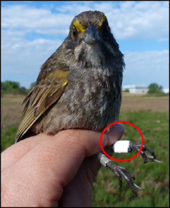
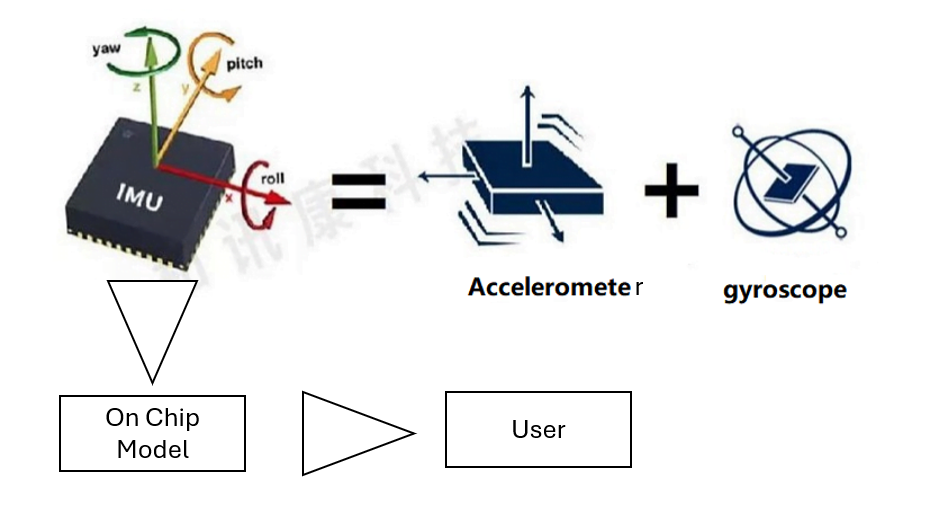
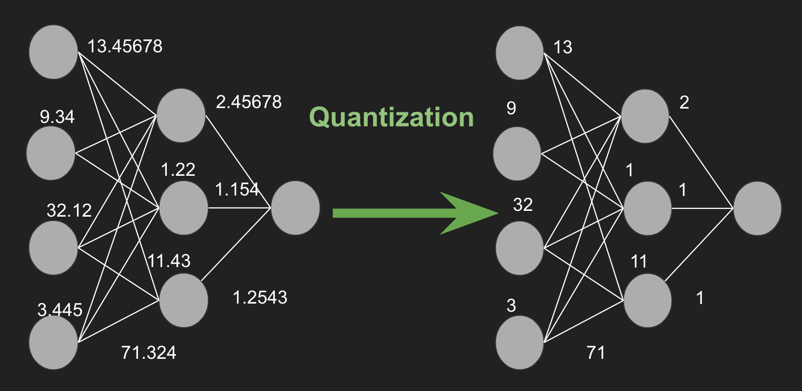

Intelligence on a Chip: IMU Motion Classification
Ambila Sivabalan
February 13, 2026
A duck goes to the store and buys a loaf of bread. The cashier says “cash or charge?”.
“Neither. Just put it on my bill.”
But how do we tell what the duck was doing?
Hi, my name is Ambilu, and I am a member of the Project Management subteam of C2S2. This semester, I had the opportunity to learn more about the work of the Software subteam, specifically their development of an Inertial Measurement Unit (IMU) pipeline and motion classification model for a low power chip designed to be mounted on birds. Their work focuses on transforming raw sensor data into meaningful behavioral insights within the strict constraints of an embedded system.
Intelligence on a Chip
Tracking wildlife movement is not as simple as knowing where an animal is located. For researchers, understanding how an animal moves can provide critical information about behavior, health, and interactions with the environment. However, transmitting large amounts of raw sensor data from a small, battery powered chip is impractical. Instead, intelligence must live directly on the chip itself. This is where the Software subteam's work becomes essential.

Bird with Tag (to show size of current tags)
From Motion to Meaning: What an IMU Does
An IMU is a sensor that measures motion using components such as accelerometers and gyroscopes. These sensors generate continuous streams of numerical data that describe how the chip is moving in three dimensional space. On their own, these numbers are difficult to interpret. The challenge is converting this raw data into classifications that describe what kind of movement is occurring.
The Software subteam developed a pipeline that processes IMU data into a format suitable for machine learning. This includes cleaning the data, organizing it into time windows, and extracting patterns that correspond to different types of motion. At a high level, this allows the chip to answer a simple but important question: what is the bird doing at a given moment?

IMU Data Stream
Building and Training the Model
After establishing the data pipeline, the Software subteam focused on developing a model capable of classifying movement. The model is trained offline using labeled IMU data, where specific motion patterns correspond to known behaviors. Through training and validation, the model learns which features of the sensor data are most useful for distinguishing between different types of movement.
An important consideration throughout this process is that accuracy alone is not sufficient. Larger and more complex models may perform well during testing but are not practical for deployment on a chip with limited resources. As a result, the team prioritized lightweight model architectures that achieve reliable classification while remaining feasible for on chip inference.
Efficiency Under Constraint
Software designed for embedded systems faces strict limitations on memory, processing power, and energy consumption. These constraints influenced every design decision made by the Software subteam.
To operate within these limits, the team focused on efficiency across the entire pipeline. This included reducing model size, minimizing computational complexity during inference, and carefully selecting features that provide the most information at the lowest cost. In this context, efficiency is what enables real world deployment rather than just improved performance metrics. A technique used is quantization, which makes models smaller and more efficient.

Logic behind Quantization of Neural Networks
Results and Impact
By the end of the semester, the Software subteam successfully implemented a functional IMU based motion classification system capable of running directly on the chip. This system allows motion data to be interpreted in real time, providing meaningful behavioral insights without the need to transmit large volumes of raw sensor data. The modular design of the pipeline also supports integration with the work of other subteams as part of the full chip.
Overall, the Software subteam demonstrated strong progress in bridging machine learning and embedded systems. Their work shows how carefully designed software can transform raw sensor data into actionable information, enabling low power chips to support real world wildlife research.